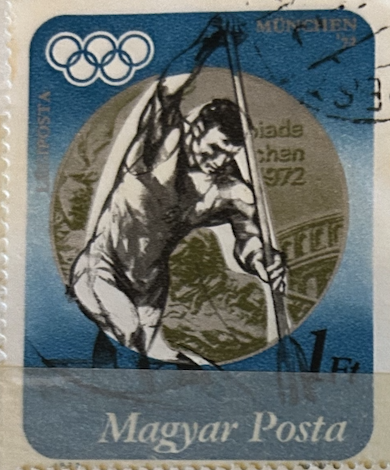
| SOURCE | TITLE| IMAGE MATCH | click to source page |
| www.dreamstime.com | Srn Stock Photos - Free & Royalty-Free Stock Photos from ... | 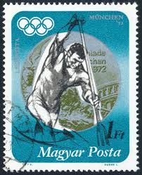 |
| www.ebay.com | Hungarian Stamp Featuring Athlete from 1972 Olympic Games | eBay | 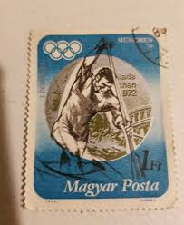 |
| www.shutterstock.com | 2 Tamas Wichmann Royalty-Free Images, Stock Photos ... | 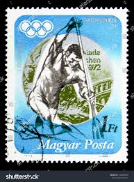 |
| www.old-stamps.com | Postage stamps with Olympics(page 9) | 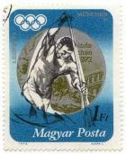 |
| www.alamy.com | Hungary stamp 1972 hi-res stock photography and images ... | 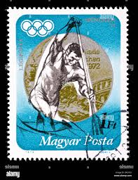 |
| brianwise.net | The Olympic Piece That Received 122 Performances - Brian Wise | 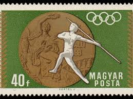 |
| commons.wikimedia.org | File:Posta Romana 2.75L Muenchen 72 proba de canoe.jpg ... | 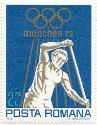 |
| www.ebay.com | 51296 - Czechoslovakia - MAXIMUM CARD - 1964 OLYMPIC GAMES ... | 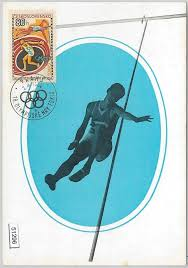 |
| www.old-stamps.com | München ´72 - Légiposta / Magyarország 1973 | 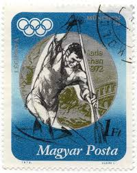 |
| www.osta.ee | 69-17 leiunurk varia sport (208563776) - Osta.ee | 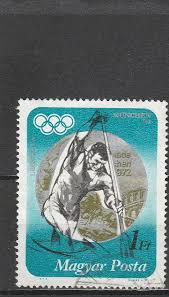 |
| www.buyhungarianstamps.com | 1598-1606,B237 Hungary - 18th Olympic Games, Tokyo, Imperf ... | 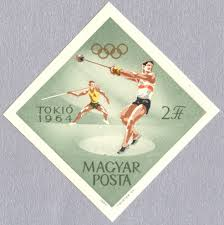 |
| www.mercadolibre.com.mx | Estampillas Varias | MercadoLibre | 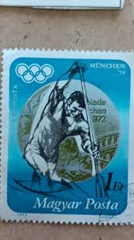 |
| findyourstampsvalue.com | Olympic Rings and Gymnastics, women's 1.55l violet, gold ... | 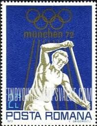 |
| www.dreamstime.com | Wichmann Stock Photos - Free & Royalty-Free Stock Photos ... | 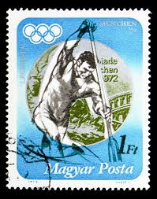 |
| www.bonanza.com | American Pintails by William J. Koelpin - and 50 similar items | 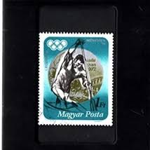 |
| www.buyhungarianstamps.com | 1647-1658 Hungary - Victories by Hungarians in the 1964 ... | 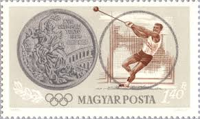 |
| pngtree.com | 57+ Olympic Medal Photos, Pictures And Background Images For ... | 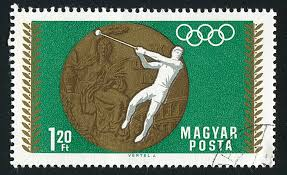 |
| www.ebay.com | Hungary 1973. Olympics Munich winners set MNH (**) Michel ... | 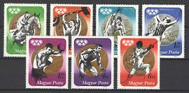 |
| www.shutterstock.com | 1 Gheorghe Megelea Royalty-Free Images, Stock Photos ... | 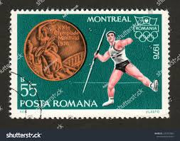 |
| www.alamy.com | Bidarka hi-res stock photography and images - Alamy | 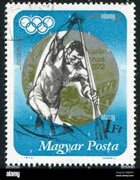 |
| www.mysticstamp.com | 1790 - 1979 10c 22nd Summer Olympic Games - Mystic Stamp Company | 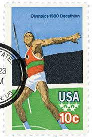 |
| www.marka-shop.net | Купить почтовые марки олимпийские игры в мюнхене (серия) Венгрия | 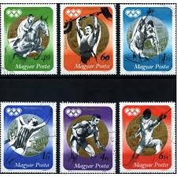 |
| encyclopaediaphilatelica.net | Vertel József - Encyclopaedia Philatelica | 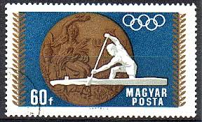 |
| esam.ir | 2 تمبر مجارستان - المپیک | 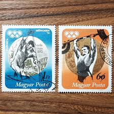 |
| en.wikipedia.org | Athletics at the 1992 Summer Olympics – Men's pole vault ... | 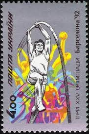 |
| www.dreamstime.com | 19th Summer Olympics, Mexico City in 1968, Olympic Medal and ... | 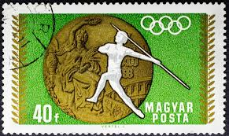 |
| www.mercadolibre.com.ar | Sello Postal Hungría - J. Olimpicos - Medallas Munich 72 (2 ... | 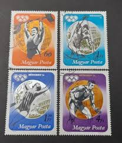 |
| www.facebook.com | The Olympic Games Torch Relay symbolizes peace, friendship ... | 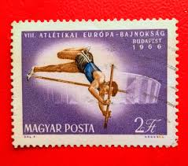 |
| www.leboncoin.fr | Collection Philatélie lot de 21 Timbres Poste Hongrie Magyar ... | 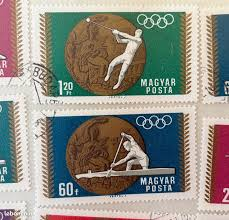 |
| www.todocoleccion.net | sellos magyar posta hungria munich 1972 - Compra venta en ... | 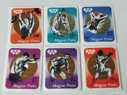 |
| findyourstampsvalue.com | Discus Thrower and Matthias Cathedral 20f green, brown ... | 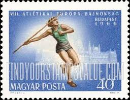 |
| www.etsy.com | 5 Stamps Series From Hungary - 1976 Winter Olympics (T12 ... | 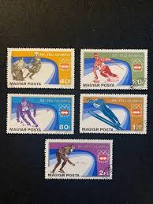 |
| www.mysticstamp.com | C97 - 1979 31c 22nd Olympic Games, High Jump - Mystic Stamp ... | 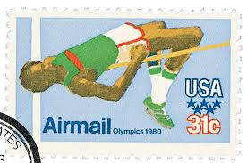 |
| www.facebook.com | For the Olympic Games in Munich, 1972, special cancelling ... |  |
| www.osta.ee | Ungari 1969, Mexico olümpiamängud, odavise, medalivõitja ... | 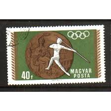 |
| www.buyhungarianstamps.com | C82-C86 Hungary - Sports Type, Set of 5 (MNH) – Eastern ... | 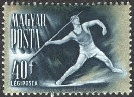 |
| www.etsy.com | Olympia 1973 Ungarn Sport Briefmarken – Medaillen - Etsy Schweiz | 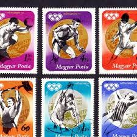 |
| en.wikipedia.org | Athletics at the 1980 Summer Olympics – Men's hammer throw ... | 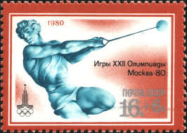 |
| www.ebay.com | Olympics Hungarian Stamps for sale | eBay | 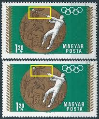 |
| www.old-stamps.com | München 1972 / Magyarország | 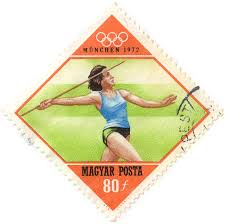 |
| postalmuseum.si.edu | Olympics | National Postal Museum | 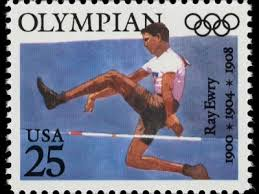 |
| myvimu.com | Silver medalist Tamas Wichmann w Muzeum zdzkul w ... | 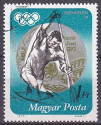 |
| postalmuseum.si.edu | The Olympics | National Postal Museum | 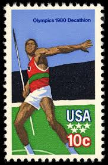 |
| www.hipstamp.com | Hungary Stamp:1956- SC#1160//7-16th Olympic Games ... | 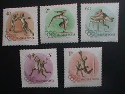 |
| www.bidcurios.com | Hungary - MH (Hinged) Stamp - 1966 European Athletics ... | 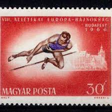 |
| www.freestampcatalogue.com | Stamps from Hungary with the theme Olympic Winter Games ... | 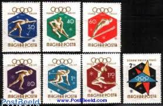 |
| aukro.cz | Sport Rumunsko od koruny - strana 13 | Aukro | 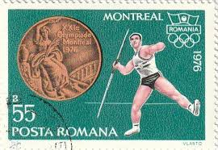 |
| www.alamy.com | Postage stamp from Hungary in the Summer Olympics 1972 ... |  |
| www.reddit.com | 1940 Finland Olympic Poster and rare accepted stamp essays ... | 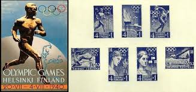 |
| www.instagram.com | Photo by Filateli (@filateli_collection) · July 28, 2025 | 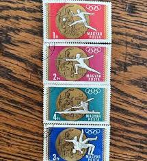 |
| kids.kiddle.co | Anniversary Facts for Kids | 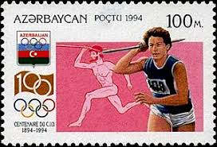 |
| philatelybg.eu | Catalog of Bulgarian Postage Stamps for BC "1701" - "III ... | |
| www.mysticstamp.com | 2553 - 1991 29c Summer Olympics: Pole Vault - Mystic Stamp ... | |
| in.pinterest.com | Hungary 1973 Olympic Games Medal Winners - Munich | |
| volstamp.in.ua | Buy 1973 Hungary Stamp Series (1972 Summer Olympics - Munich ... | |
| www.reddit.com | Olympique games of Munich 1972 : r/olympics | |
| findyourstampsvalue.com | Value of olympic 1964 stamps | |
| www.gymnasticshistory.co.uk | 1960 Rome Olympic Games - Gymnastics History | |
| www.ebay.com | HUNGARY UNGARN 1976 3164-68 B 2451-55 IMPERF Olympics ... |
{kind=link}